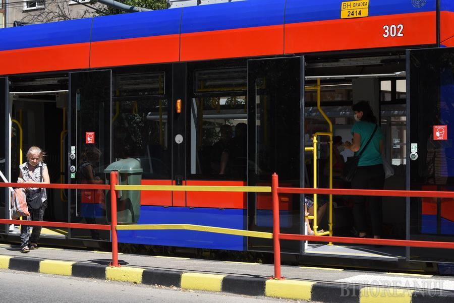

Limba:
Al 4-lea tramvai a sosit la Cluj-Napoca
23 iulie 2020
In seara de 22 iulie al 4-lea tramvai Imperio pentru orasul de pe Somesul Mic era deja sosit pe trailer. Acesta a fost descarcat in acea seara, conform unor surse apropiate.
6 august 2020
Tramvaiul Imperio 302 a fost reparat si a reintrat in circulatie

Dupa 6 zile de tras chiulul, Imperio-ul 302 a revenit astazi la ora 7:27 pe traseu, fiind pe linia 4R.
5 august 2020
De ce tramvaiele Imperio se retrag in depou la ora 17
 Poate va intrebati de ce tramvaiele Imperio se retrag de pe traseu la ora 17. In acest articol, vom da raspunsul.
Poate va intrebati de ce tramvaiele Imperio se retrag de pe traseu la ora 17. In acest articol, vom da raspunsul.
3 august 2020
Cum unele Boeing 737 sunt echipați pentru a ateriza pe pietriș
 Nu toate pistele sunt netede; unele sunt suprafețe dure, precum pietrișul, în timp ce altele folosesc suprafețe de iarbă sau nisip. Aceasta are implicații pentru care aeronave le pot folosi.
Nu toate pistele sunt netede; unele sunt suprafețe dure, precum pietrișul, în timp ce altele folosesc suprafețe de iarbă sau nisip. Aceasta are implicații pentru care aeronave le pot folosi.